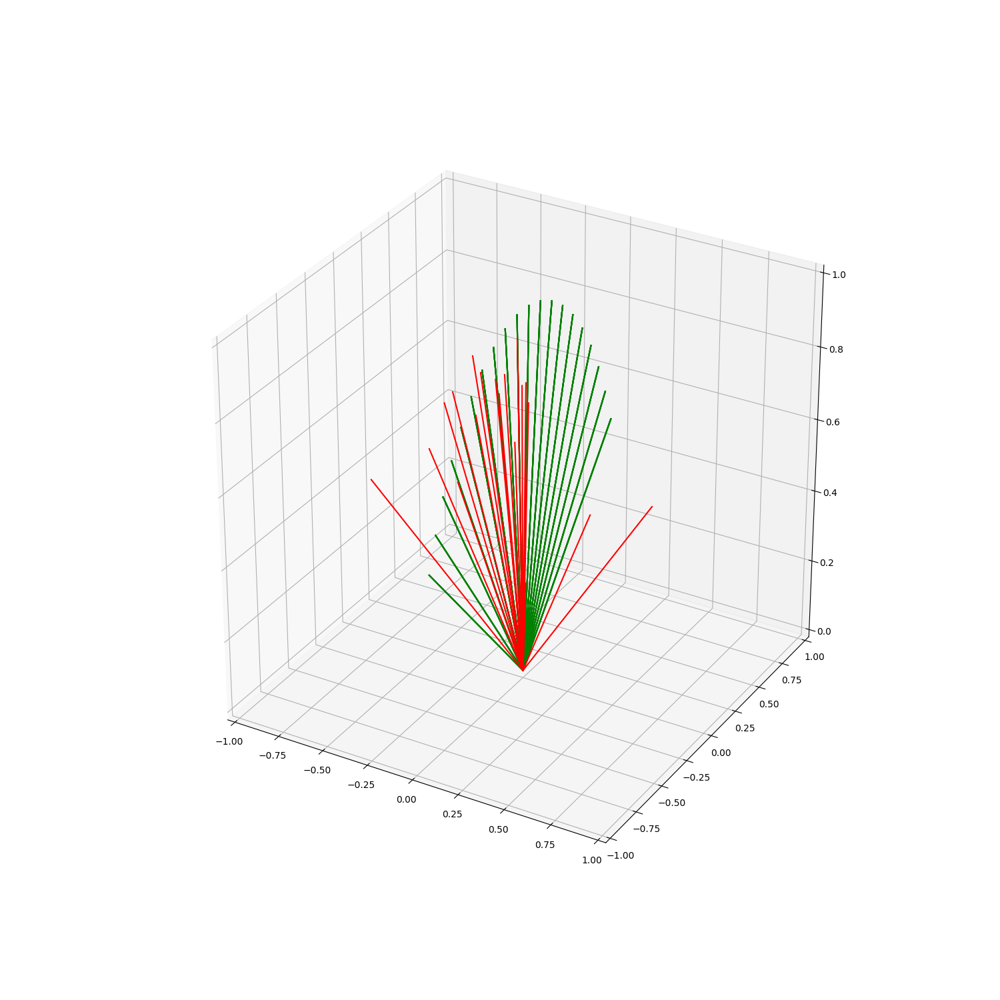

Note
Click here to download the full example code
Custom Scans¶

import numpy as np
import matplotlib.pyplot as plt
from mpl_toolkits.mplot3d import Axes3D
import sorts
class NEFence(sorts.radar.Scan):
def __init__(self, min_elevation=30.0, dwell=0.2, resolution=20):
super().__init__(coordinates='azelr')
self._dwell = dwell
self.resolution = resolution
self.min_elevation = min_elevation
self._az = np.empty((resolution,), dtype=np.float64)
self._el = np.linspace(min_elevation, 180-min_elevation, num=resolution, dtype=np.float64)
inds_ = self._el > 90.0
self._az[inds_] = 180.0
self._az[np.logical_not(inds_)] = 0.0
self._el[inds_] = 180.0 - self._el[inds_]
def dwell(self, t=None):
return self._dwell
def min_dwell(self):
return self._dwell
def cycle(self):
return self.resolution*self._dwell
def pointing(self, t):
ind = (np.mod(t/self.cycle(), 1)*self.resolution).astype(np.int)
if not isinstance(t, float):
shape = (3, len(t))
else:
shape = (3, )
azelr = np.empty(shape, dtype=np.float64)
azelr[0,...] = self._az[ind]
azelr[1,...] = self._el[ind]
azelr[2,...] = 1.0
return azelr
class RNG(sorts.radar.Scan):
def __init__(self, dwell=0.2):
super().__init__(coordinates='enu')
self._dwell = dwell
def dwell(self, t=None):
'''The current dwell time of the scan in seconds.
'''
if t is None:
return self._dwell
else:
return t*0 + self._dwell
def cycle(self):
return np.inf
def pointing(self, t):
if not isinstance(t, float):
shape = (3, len(t))
rng_shape = (2, len(t))
else:
shape = (3, )
rng_shape = (2, )
enu = np.empty(shape, dtype=np.float64)
enu[:2,...] = (np.random.rand(*rng_shape)*2 - 1)/np.sqrt(2)
enu[2,...] = np.sqrt(1 - np.linalg.norm(enu[:2,...], axis=0))
return enu
scan = NEFence()
rng_scan = RNG()
np.random.seed(384783)
fig = plt.figure(figsize=(15,15))
ax = fig.add_subplot(111, projection='3d')
point = scan.enu_pointing(np.linspace(0,scan.cycle(),num=100))
rng_point = rng_scan.enu_pointing(np.linspace(0,scan.dwell()*20,num=20))
for i in range(point.shape[1]):
ax.plot([0, point[0,i]], [0, point[1,i]], [0, point[2,i]], 'g-')
for i in range(rng_point.shape[1]):
ax.plot([0, rng_point[0,i]], [0, rng_point[1,i]], [0, rng_point[2,i]], 'r-')
# sorts.plotting.grid_earth(ax)
ax.axis([-1,1,-1,1])
ax.set_zlim([0,1])
plt.show()
Total running time of the script: ( 0 minutes 0.470 seconds)